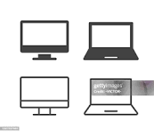

Objetivos da inclusão digital
- 1. Democratizar o acesso à tecnologia: Tornar as ferramentas digitais acessíveis a todos, independentemente da sua localização geográfica, condição socioeconômica ou nível de educação.
- 2. Promover o desenvolvimento: Permitir que as pessoas usem a tecnologia para acessar oportunidades de educação, melhorar a qualificação profissional e participar do mercado de trabalho.
- 3.Fortalecer a cidadania: Capacitar os cidadãos para acessar informações, serviços públicos e interagir com o governo e outros indivíduos por meio de canais digitais.
- 4. Reduzir a exclusão digital: Evitar que grupos específicos fiquem marginalizados por não terem acesso ou conhecimento para utilizar as tecnologias digitais. 